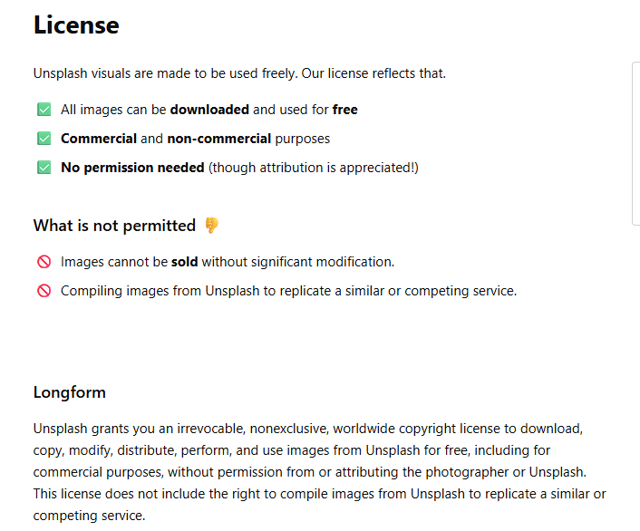
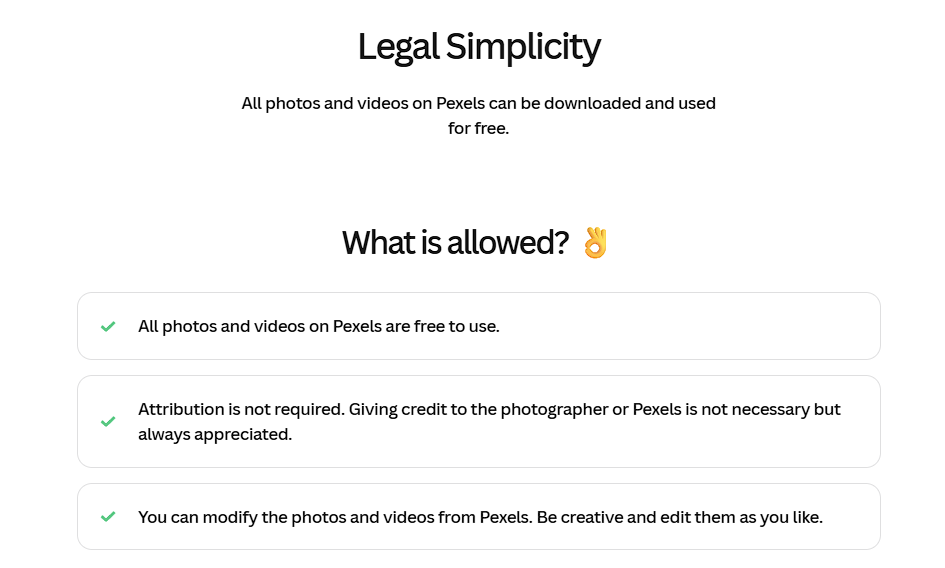
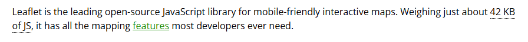

Plan of Work Log
Student Copyright Checklist
Proof of Free Use Agreements


Humble Roots – Research & Sourcing Links
Ingredient Suppliers & Ethical Brands
| Supplier | Product Type | Website |
|---|---|---|
| Upton's Naturals | Vegan jackfruit, seitan | uptonsnaturals.com |
| Navitas Organics | Superfoods, cacao | navitasorganics.com |
| Lotus Foods | Biodiverse rice | lotusfoods.com |
| The Chia Co | Chia seeds | thechiaco.com |
| Runamok Maple | Organic maple syrup | runamokmaple.com |
| Native Forest | Coconut milk, canned goods | edwardandsons.com |
| Numi Organic Tea | Fair Trade tea | numitea.com |
| Oatly | Oat milk | oatly.com |
| Alter Eco | Quinoa, chocolate | alterecofoods.com |
| Frontier Co-op | Fair Trade spices | frontiercoop.com |
| Soom Foods | Tahini | soomfoods.com |
| Drake's Family Farms | Almonds, nut butters | drakesfamilyfarms.com |
| Smiling Hara Tempeh | Organic tempeh | smilingharatempeh.com |
| Rainshadow Organics | Produce (OR) | rainshadoworganics.com |
| Bob's Red Mill | Grains, flours, polenta | bobsredmill.com |
| Madhava Foods | Agave, clean sweeteners | madhavafoods.com |
| Equal Exchange | Mangoes, bananas, coffee, chocolate | equalexchange.coop |
| Coastal Roots Farm | Organic produce (CA) | coastalrootsfarm.org |
| Harmony Fields | Produce (WA) | harmonyfields.com |
| Foraged & Found | Wild mushrooms | foragedandfound.com |
Menu Inspiration & Recipe Development
| Source | Focus | Website |
|---|---|---|
| Thrive Market Blog | Clean, organic recipes | thrivemarket.com/blog |
| Bon Appétit – Vegan Recipes | Trendy vegan meals | bonappetit.com/recipes/vegan |
| Minimalist Baker | Vegan sauces, dips, mains | minimalistbaker.com |
| Whole Foods Market Recipes | Seasonal plant-based dishes | wholefoodsmarket.com/recipes |
| Plant-Based News | Industry trends, activism | plantbasednews.org |
| The Good Trade | Ethical lifestyle & brands | thegoodtrade.com |
| Chef's Pencil – Vegan Pricing Study | Average vegan food costs globally | chefspencil.com |
Certifications & Sustainability Standards
| Organization | Purpose | Website |
|---|---|---|
| Fair Trade USA | Certification body for ethical trade | fairtradecertified.org |
| Non-GMO Project | Non-GMO verification | nongmoproject.org |
| USDA Organic Integrity Database | Organic supplier lookup | organic.ams.usda.gov |
| Environmental Working Group (EWG) | Consumer food safety & sustainability guides | ewg.org |